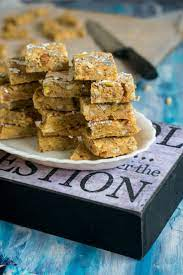

Gulab Jamun
Ingredient
- Flour
- Grated Paneer
- Sooji/Rava
Recipe
- Boil sugar and water to prepare syrup remove from fire. Add cardamom and keep aside to cool.
- In a mixing bowl put the flour, paneer, sooji, Nestlé MILKMAID, baking powder and baking soda.
- Divide the mixture into 30-35 portions and gently roll into round gulab jamuns. Fry in the oil.
- Keep putting the fried gulab jamuns in the prepared sugar syrup. Once all the gulab jamuns.
- Serve warm.

Barfi
Ingredient
- condensed milk
- cup milk powder
- 2 tablespoon ghee
Recipe
- Take a large bowl and add milk powder to it along with milk. Make a rigid dough using these ingredients.
- Take the dough and grate it in a bowl. Keep this grated dough aside for further usage.
- Add the grated dough to this pan with water. Mix well and stir in cardamom powder in the pan.
- Pour this prepared mixture into a greased tray and garnish it with almonds and pistachios. Let the mixtur.
- Serve!
